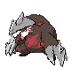
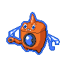
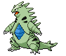
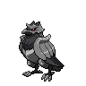

Competitivo
Todo un mundo aparte de la historia, mas complejo de lo que parece
AVISO
Sí es tu primera vez en estos juegos te recomendamos ignorar este apartado del juego ya que puede ser bastante estresante si no estas bien preparado.
Tiers
Hay variaciones en varios aspectos del combate
Entre las variaciones se destacan prohibiciones en pokemones objetos y movimientos para fomentar un ambiente mas justo y evitar estrategias invencibles o que pospongan el combate por grandes cantidades de tiempo.
Por si no sabias
Las tiers oficiales se cogen de la web en inglés de “Smogon” al ser la referencia del mundo competitivo. Tier es el nombre que se da a la clasificación por poder y uso de todos los Pokémon existentes en su uso competitivo. Las Tiers varían a lo largo de cada generación y cada equis tiempo puede haber cambios en las Tiers, ya sea porque un Pokémon suba a una Tier superior o baje a una inferior.
Actualmente hay 7 tier
OU(OverUsed)
UU(UnderUsed)
RU(RarelyUsed)
NU(NeverUsed)
LC(LitleCup)
NFE(NoFullyEvolved)
Sin olvidar que....
Además hay tiers "intermedias" llamadas BL (BorderLine) o Limbo, donde muy pocos Pokémon se engloban ahí al estar a caballo entre 2 Tiers, no siendo suficiente para llegar a la superior pero siendo demasiado abusivo para la inferior, como pueden ser Staraptor o Cresselia.
Variables a considerar
- Crianza.
- Tabla de tipos.
- Estrategias.
Explicacion:)
- Crianza:es un metodo para hacer pokemones de mejores atributos.
- Tabla de tipos:como su nombre lo indica recopila todos los tipos que puede tener un pokemon y los agrupa por efectividad.
- Estrategias:como todo juego hay estrategias que funcionan mas que otras por lo que las tendras que considerar antes de hacer un equipo.
Top
Algunos pokemones son mejores, aqui los mejores 5(segun nuestra opinion)
| Pokemon | imagen | Porcentaje de uso |
|---|---|---|
| 1 Exadrill |  | 82% |
| Rotom (lavadora) |  | 63% |
| Tyranitar |  | 63% |
| Whimsicott |  |
43% |
| Corviknight |  | 37% |
| fuente:https://www.dexerto.es/pokemon/estas-son-las-criaturas-mas-usadas-en-el-competitivo-de-pokemon-espada-y-escudo-1179845/ | ||